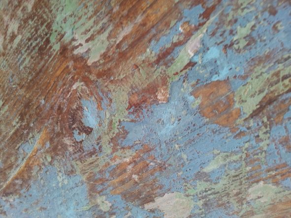

| En el alba (aquella que ha nacido con la primera luz) (2010) | Para soprano, electrónica en vivo y electrónica sobre soporte (ca. 13 min). Mención Honrosa en el 4to Concurso Latinoamericano de Composición Electroacústica Gustavo Becerra Schmidt (Chile). Partitura | Grabación |
| Ante el agua especular (2010) | Para soprano, dos violines, tres voces femeninas, tres voces masculinas, director, gong, electrónica en vivo y sobre soporte fijo (ca. 15 min). Partitura |
| χειρονομία (quironomía)[çiɾonoˈmia] (2021) | Para percusionista y Kinect. Obra compuesta por encargo del Percusionista mexicano Eusebio Sánchez (México). Estreno: 22 de septiembre de 2021, Teatro Mayor Julio Mario Santodomingo. Partitura | Video |